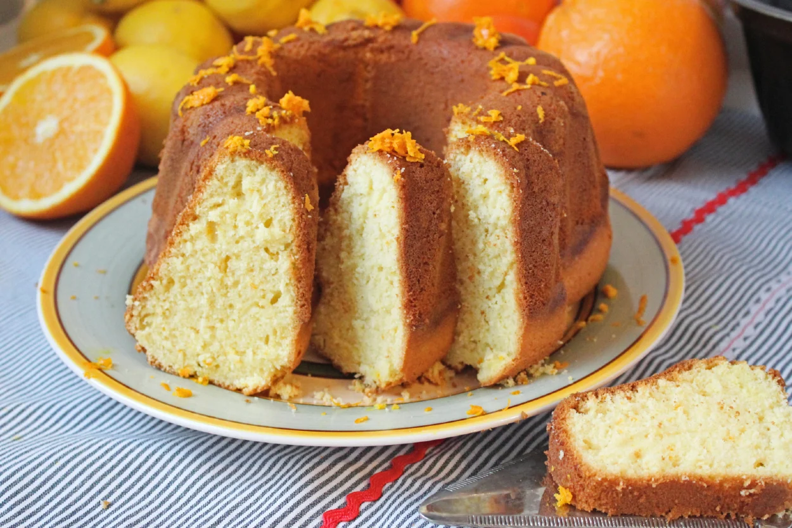
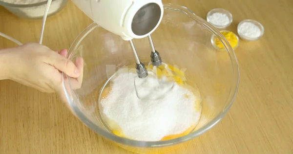
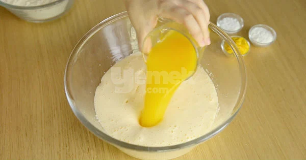
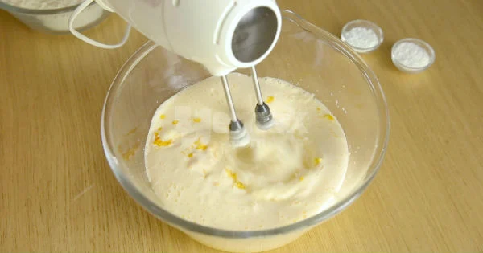
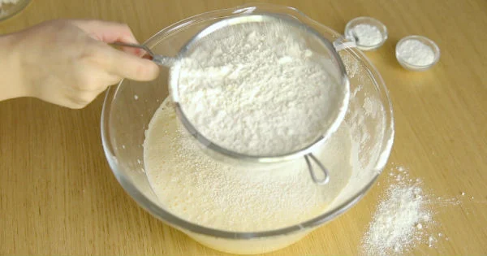
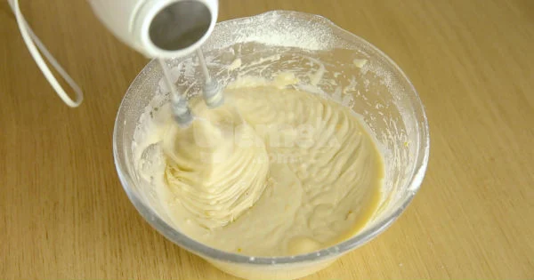
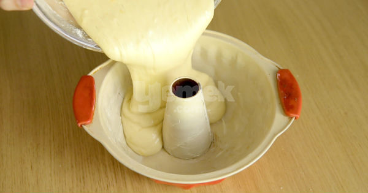
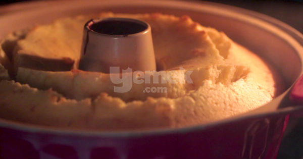
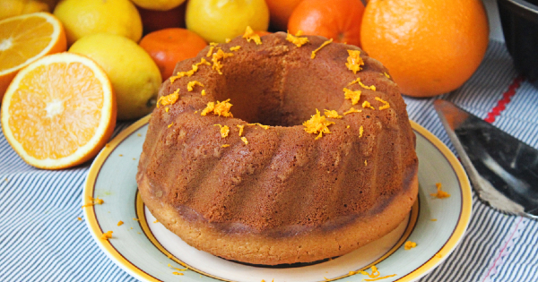

Portakallı Kek

- Kalori: 236 kcal
- Kaç kişilik: 4 kişi
- Hazırlanma süresi: 15 dakika
- Pişirme süresi: 35 dakika
Gerekli Malzemeler
- 3 adet yumurta (oda ısısında)
- 1 su bardağı toz şeker
- 1 su bardağı portakal suyu (taze sıkılmış, oda ısısında)
- 1/2 su bardağı sıvı yağ
- 2,5 su bardağı un
- 1 paket kabartma tozu
- 1 yemek kaşığı rendelenmiş portakal kabuğu
- 2 paket vanilya
- 1 yemek kaşığı tereyağı
Nasıl yapılır
- Oda sıcaklığındaki yumurtaları şekerle birlikte bir kaba alıp güzelce çırpın.

- Ardından üzerine sıvı yağ ve portakal suyunu da ekleyerek çırpmaya devam edin.

- Un hariç diğer malzemeleri de ekleyerek çırpın.

- Unu eleyerek harca ekleyin.

- Kıvam alana kadar çırpın.

- Yağlanmış kek kalıbına harcı aktarın.

- 170 derecede önceden ısıtılmış fırında kontrollü olarak 35- 40 dakika pişirin.

- Oda sıcaklığında soğuttuktan sonra kalıptan çıkarıp dilimleyerek servis edin. Afiyet olsun.
